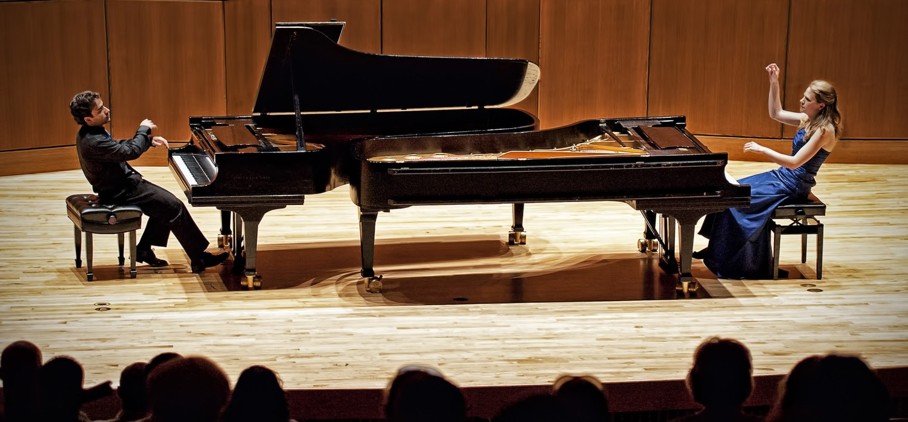

The Piano
The piano is one of the most beautiful instruments of all time. Whether it is played as
a solo or as an accompaniment, or whether it is simply used as the background instrumental
of a pop song does not matter, it always has that familiar timbre to it that brings joy,
calmness, or sorrow to whoever listens to it. In the world, approximately 25% of people
play the piano, to note the popularity of the instrument. Specifically in the United States alone,
there are approximately 18 million amateur piano players, and a total of more than 10 million pianos!
Aside from being a commonly learned instrument, the piano is also said to be the 'King of
the Instruments' due to its full coverage of an entire orchestra's range, from the highest
note on the piccolo to the lowest note you can produce out of a double-bassoon. However,
despite the smooth, melodic music that comes through the piano, it is actually a known as
a percussion instrument due to the fact that it only sounds by a hammer hitting a string.
Playing the piano would mean you are considered both a pianist and a percussionist, and on top of that,
the instrument could become your passion and talent, and benefit your future.
<- Fun Fact: this is the world's most expensive piano!